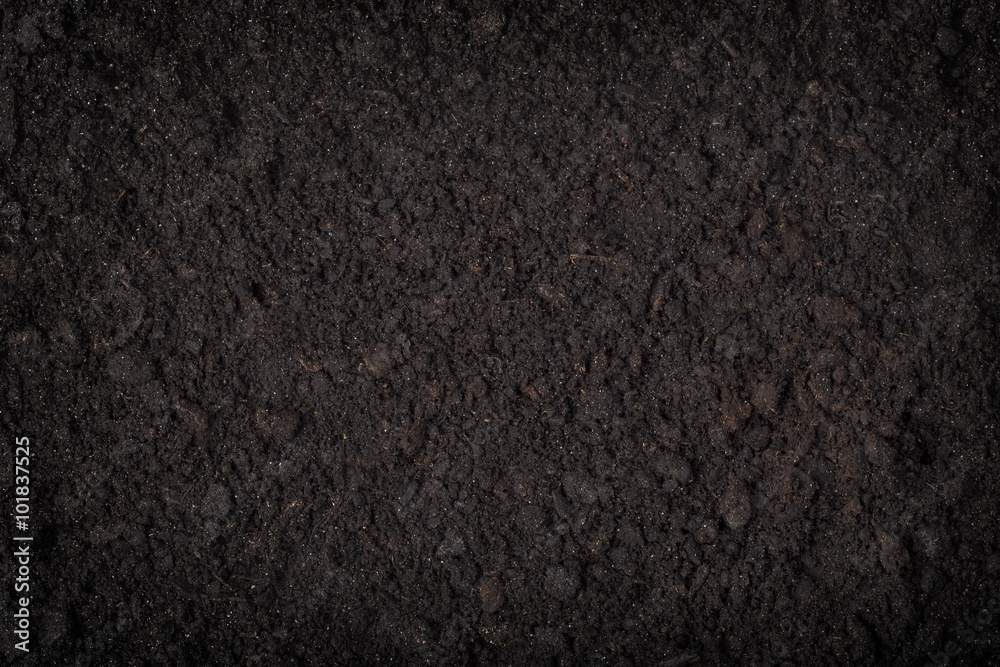
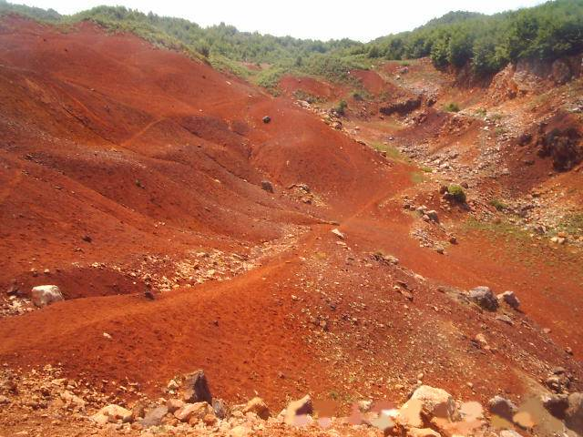
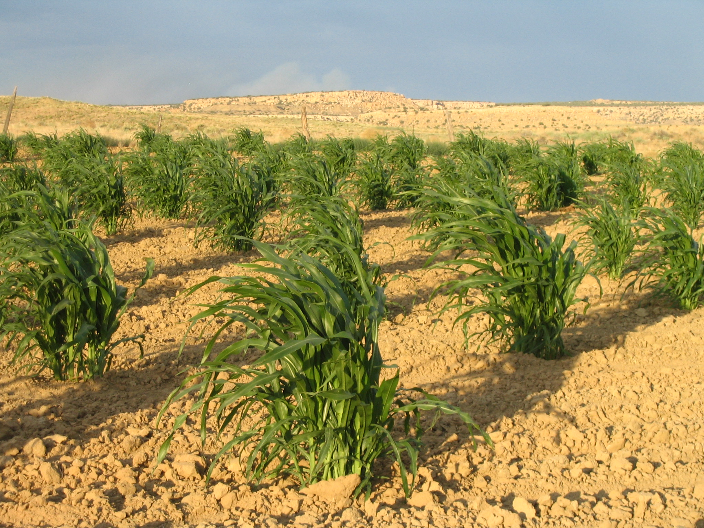
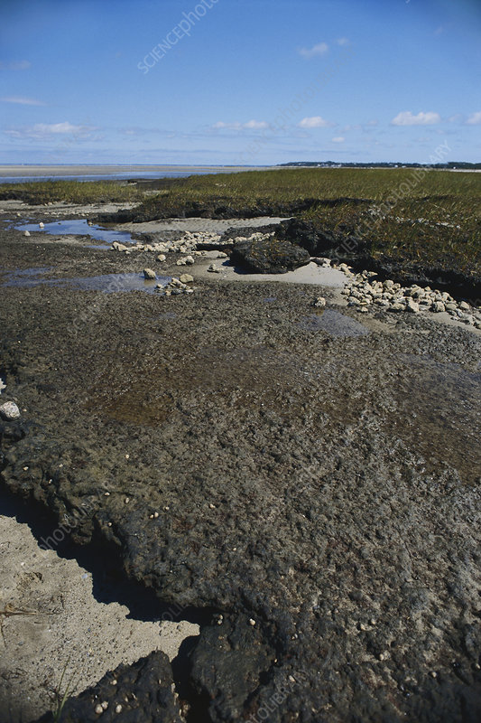
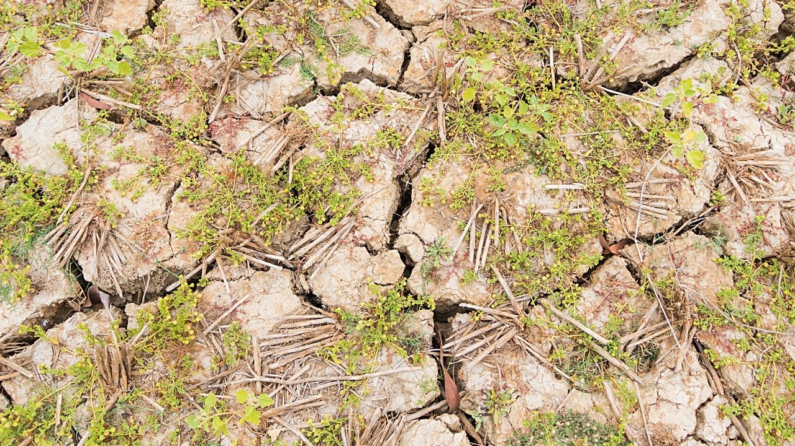
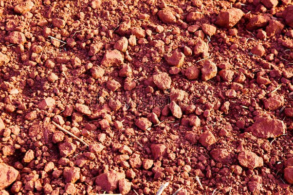

Crop Rotation Guide
Home

Black Cotton Soil (Regur)

Red & Yellow Soil
Alluvial Soil
Mountainous Soil

Arid or Desert Soil

Peaty & Marshy Soil

Saline & Alkaline Soil

Laterite Soil
Black Cotton Soil (Regur Soil)
×
First Crop: Cotton
Second Crop: Soybean or Chickpea
Example: Cotton-Soybean Rotation
Red & Yellow Soil
×
First Crop: Groundnut
Second Crop: Mustard
Example: Groundnut-Mustard Rotation
Alluvial Soil
×
First Crop: Rice (Kharif season)
Second Crop: Wheat (Rabi season)
Example: Rice-Wheat Rotation
Mountainous or Forest Soil
×
First Crop: Barley
Second Crop: Potatoes
Example: Barley-Potato Rotation
Arid or Desert Soil
×
First Crop: Pearl Millet (Bajra)
Second Crop: Cluster Beans
Example: Pearl Millet-Cluster Beans Rotation
Peaty and Marshy Soil
×
First Crop: Cranberries
Second Crop: Reed Canary Grass
Example: Cranberries-Reed Canary Grass Rotation
Saline and Alkaline Soil
×
First Crop: Barley (tolerant to saline conditions)
Second Crop: Mustard
Example: Barley-Mustard Rotation
Laterite Soil
×
First Crop: Tapioca (Cassava)
Second Crop: Sweet Potato
Example: Tapioca-Sweet Potato Rotation